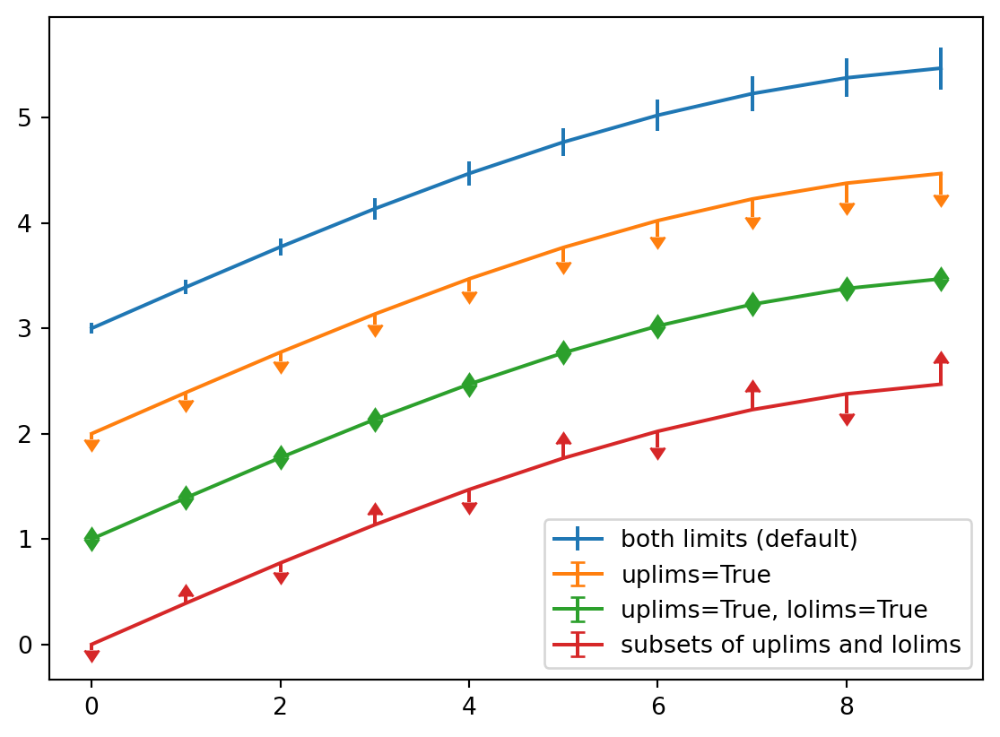
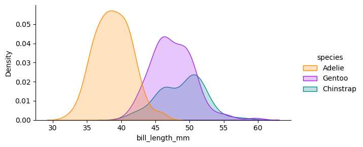
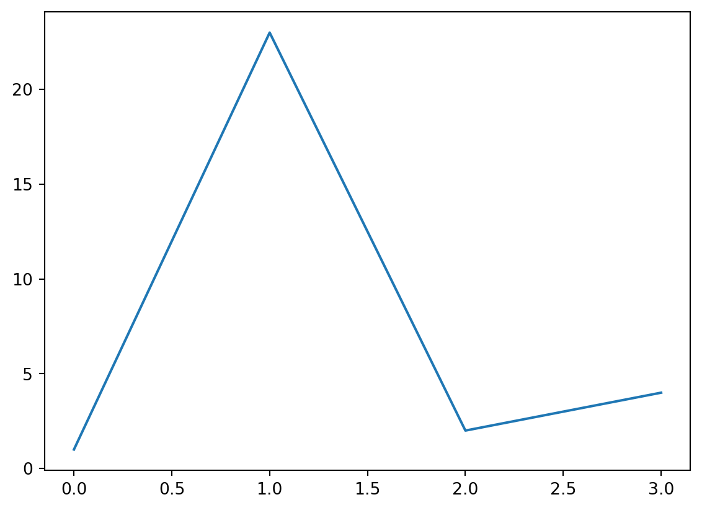

Code
import numpy as np
a = np.arange(15).reshape(3, 5)
aarray([[ 0, 1, 2, 3, 4],
[ 5, 6, 7, 8, 9],
[10, 11, 12, 13, 14]])In this document we will introduce a number of the key features Quarto markdown files support. We will be following the basic tutorial from Quarto as well as summarising some of the more advanced features introduced in their comprehensive guide. 1
1 Blog photo by Setyaki Irham from Unsplash
Quarto allows you to easily share and publish your code/analysis/research through any of markdown/jupyter/knitr. It is an extension of pandoc and offers support for python/R/Julia.
jupyter notebooksSharing jupyter notebooks is tedious. Either you share a link to a prerendered notebook on github or you awkwardly convert to html/pdf with a variety of tools.
The problem? The conversion of a notebook is awkward. Often you have to choose between removing all or including all the code. And while the markdown support within jupyter is good again the customisation is limited.
Quarto solves this. It is a rendering tool that gives you a number of options with customise how code, figures and text are arranged when converting to html and pdf.
Even better it provides a new markdown format .qmd that allows you to write python code within a markdown document (similar to R markdown) or link to figures within a precomputed jupyter notebook.
Create code blocks in markdown using ```{python}
```{python}
import numpy as np
a = np.arange(15).reshape(3, 5)
a
```import numpy as np
a = np.arange(15).reshape(3, 5)
aarray([[ 0, 1, 2, 3, 4],
[ 5, 6, 7, 8, 9],
[10, 11, 12, 13, 14]])Control how figures appear with comments #| keyword: value. 2
2 The getting started tutorial has a nice description of the main options for figures and code output
```{python}
#| label: fig-limits-eg
#| fig-cap: "Errorbar limit selector"
import matplotlib.pyplot as plt
fig = plt.figure()
x = np.arange(10)
y = 2.5 * np.sin(x / 20 * np.pi)
yerr = np.linspace(0.05, 0.2, 10)
plt.errorbar(x, y + 3, yerr=yerr, label='both limits (default)')
plt.errorbar(x, y + 2, yerr=yerr, uplims=True, label='uplims=True')
plt.errorbar(x, y + 1, yerr=yerr, uplims=True, lolims=True,
label='uplims=True, lolims=True')
upperlimits = [True, False] * 5
lowerlimits = [False, True] * 5
plt.errorbar(x, y, yerr=yerr, uplims=upperlimits, lolims=lowerlimits,
label='subsets of uplims and lolims')
plt.legend(loc='lower right')
plt.show(fig)
```import matplotlib.pyplot as plt
fig = plt.figure()
x = np.arange(10)
y = 2.5 * np.sin(x / 20 * np.pi)
yerr = np.linspace(0.05, 0.2, 10)
plt.errorbar(x, y + 3, yerr=yerr, label='both limits (default)')
plt.errorbar(x, y + 2, yerr=yerr, uplims=True, label='uplims=True')
plt.errorbar(x, y + 1, yerr=yerr, uplims=True, lolims=True,
label='uplims=True, lolims=True')
upperlimits = [True, False] * 5
lowerlimits = [False, True] * 5
plt.errorbar(x, y, yerr=yerr, uplims=upperlimits, lolims=lowerlimits,
label='subsets of uplims and lolims')
plt.legend(loc='lower right')
plt.show(fig)
import plotly.express as px
import plotly.io as pio
gapminder = px.data.gapminder()
gapminder2007 = gapminder.query("year == 2007")
fig = px.scatter(gapminder2007,
x="gdpPercap", y="lifeExp", color="continent",
size="pop", size_max=60,
hover_name="country")
fig.show()```{python}
#| label: fig-gapminder
#| fig-cap: "Life Expectancy and GDP"
#| fig-subcap:
#| - "Gapminder: 1957"
#| - "Gapminder: 2007"
#| layout-ncol: 2
#| column: page
```import plotly.express as px
import plotly.io as pio
gapminder = px.data.gapminder()
gapminder2007 = gapminder.query("year == 2007")
fig = px.scatter(gapminder2007,
x="gdpPercap", y="lifeExp", color="continent",
size="pop", size_max=60,
hover_name="country")
fig.show()
gapminder1957 = gapminder.query("year == 1957")
fig = px.scatter(gapminder1957,
x="gdpPercap", y="lifeExp", color="continent",
size="pop", size_max=60,
hover_name="country")
fig.show()It is simple to embed plots from precomputed notebooks and include a link.
{{< embed penguins.ipynb#fig-bill-scatter >}}{{< embed penguins.ipynb#fig-bill-marginal >}}

You can also include the code by specifying echo=true in the call.
{{< embed penguins.ipynb#species-counts echo=true >}}You can control how the link to the notebook appears in the title metadata 3
3 See the notebook embedding tutorial for more info
notebook-view:
- notebook: penguins.ipynb
title: "Plots and Computations"There are a number of ways to control the rendering of code. For example, if you have a notebook with some code that takes a long time to run you won’t want to recompute it everytime you change formatting. There are many options to control this behaviour. 4
4 see the python tutorial for a more in depth explanation
execute:
freeze: true Quarto has nice control for adding note blocks. There are five formats 5 - note - warning - important - tip - caution
5 See their tutorial for a more in depth explanation To add a callout note use {.callout-note} or {.callout-important} etc
::: {.callout-note}
Note that there are five types of callouts, including:
`note`, `warning`, `important`, `tip`, and `caution`.
:::
::: {.callout-tip}
## Tip with Title
This is an example of a callout with a title. See [their tutorial](https://quarto.org/docs/authoring/callouts.html) for a more in depth explanation
:::
::: {.callout-caution collapse="true"}
## Expand To Learn About Collapse
This is an example of a 'folded' caution callout that can be expanded by the user. You can use `collapse="true"` to collapse it by default or `collapse="false"` to make a collapsible callout that is expanded by default.
:::Note that there are five types of callouts, including: note, warning, important, tip, and caution.
This is an example of a callout with a title.
This is an example of a ‘folded’ caution callout that can be expanded by the user. You can use collapse="true" to collapse it by default or collapse="false" to make a collapsible callout that is expanded by default.
import matplotlib.pyplot as plt
plt.plot([1,23,2,4])
plt.show()
This is a cross reference to our figure Figure 5 with @fig-line-plot. We can also reference the matplotlib figure above Figure 1 @fig-limits.
You must start your label with fig- e.g. fig-line-plot for the cross reference to work.
You can include citations by including a bibliography.
For example, Antoine et al produced some sick work (Lain et al. 2022).
Add a path to your bibliography in the title metadata
---
title: "My Document"
bibliography: references.bib
---You can customise citation style and more.6
6 Footnotes are also possible. For more guidance see the quarto tutorial
---
title: "My Document"
bibliography: references.bib
csl: nature.csl
---Citation can also be placed in the margin by adding
citation-location: marginWe can also write equations.
They can be placed inline \(\frac{d}{dx}\left( \int_{a}^{x} f(u)\,du\right)=f(x).\) $\frac{d}{dx}\left( \int_{a}^{x} f(u)\,du\right)=f(x).$.
They can be placed centrally.
$$\frac{d}{dx}\left( \int_{a}^{x} f(u)\,du\right)=f(x).$$\[\frac{d}{dx}\left( \int_{a}^{x} f(u)\,du\right)=f(x).\]
But they can also be placed in the margin
::: {.column-margin}
We know from *the first fundamental theorem of calculus* that for $x$ in $[a, b]$:
$$\frac{d}{dx}\left( \int_{a}^{x} f(u)\,du\right)=f(x).$$
:::We know from the first fundamental theorem of calculus that for \(x\) in \([a, b]\):
\[\frac{d}{dx}\left( \int_{a}^{x} f(u)\,du\right)=f(x).\]